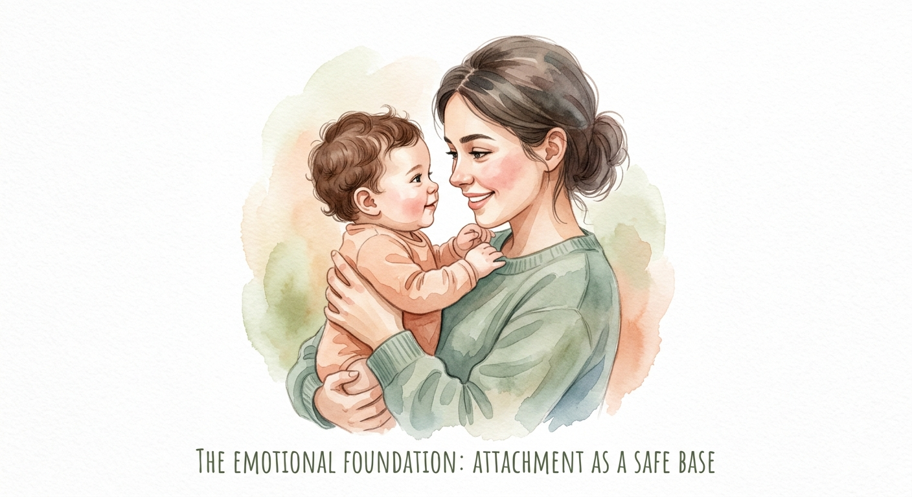

自分はどう作られるか ―愛着の歴史と成人のアタッチメント―
私たちが「自分」という存在を確立し、社会の中で他者と関わるための根源的な絆をアタッチメント（愛着）と呼びます。この研究の歴史は1940年代、第二次世界大戦の前後にまで遡ります。
先駆者であるルネ・スピッツ（René Spitz）は、当時の乳児施設で、衛生的で栄養も十分でありながら、特定の養育者との心の交流がない乳児たちが次々と衰弱し、高い確率で亡くなる「ホスピタリズム」を報告しました。これは、「人間が生存するためには、物質的なケアだけでは不十分であり、精神的な絆が酸素と同等に不可欠である」という、発達心理学における最も衝撃的な発見でした。

スピッツの発見は、乳児という存在が受動的な栄養の受け手ではなく、他者との関係を必要とする能動的な社会的存在であることを社会に知らしめました。この知見は、のちの愛着理論の礎となります。
スピッツの研究を引き継いだジョン・ボウルビィ（John Bowlby）は、愛着を「生存戦略」と位置づけました。乳児の泣きや後追い行動は、単なる未熟さではなく、外敵や飢餓から自分を守るための、進化論的な防衛プログラムです。ボウルビィは、この関係性を通じて子供の脳内に内的ワーキングモデル（Internal Working Model: IWM）という「心の設計図」が構築されると論じました。
内的ワーキングモデルは、他者は信頼できるか（他者モデル）、自分は助けられる価値があるか（自己モデル）という問いに対する無意識の答えです。これは3歳以前の記憶がほとんどない「幼児期健忘」の時期に形成されるため、自分では思い出すことができませんが、その後の人生におけるあらゆる対人関係のプロトタイプとして、強力に働き続けます。
メアリー・エインズワースの実験を経て、愛着理論は成人期へと拡張されました。バーソロミュー（Bartholomew, K.）の分類によれば、成人のアタッチメントは、他者への信頼と自己への肯定的評価の組み合わせにより4つに分けられます。
安定型：自己と他者を信頼できる。素直に助けを求め、良好な親密さを保てる。
とらわれ型：自己の価値を低く見るが、他者は求める。見捨てられる不安から、相手の言動に過敏に反応しやすい。
拒絶・軽視型：自尊心は高いが他者を信頼しない。過剰な自立を強調し、情緒的な親密さを遮断する。
恐れ型：自己も他者も否定的に捉える。親密さを求めたいが、傷つくのが怖くて近づけない。
ここで理解すべき最も重要な点は、これらのスタイルは決して「欠陥」ではないということです。これらは、幼少期に自分自身を傷つくことから守るために、脳が獲得せざるを得なかった必死の適応戦略（生き残るための格闘の歴史）です。例えば、拒絶・軽視型の人は、愛しても無駄だった環境で、傷つかないために「感情を遮断する」という戦術を学習した結果なのです。それは、当時の環境では最も賢明な生存戦略でした。
過去の防衛戦略が、現在の人間関係において不適合（ミスマッチ）を起こしていると感じる場合、私たちはその物語を書き換えることができます。その鍵となるのがリフレクティブ・ファンクション（省察的機能）の研究です。これは、自分の心の動きを客観的に観察（メタ認知）し、他者の内面を推論する能力を指します。
過去の適応戦略が「今、なぜこの状況で発動しているのか」という予測エラーに気づくこと。自分を、そして他者を、決めつけずに別の視点から見直すこと。このリフレクティブ・ファンクションを鍛えることで、私たちは過去のプログラムを上書きし、「獲得された安定型」へと成長し続けることが可能なのです。
小学校・中学校の道徳や国語の授業で「相手の気持ちを想像しよう」と習ったことは、実はこのリフレクティブ・ファンクションを養う訓練でした。発達心理学の知識があれば、過去の学びを「ただの教科の知識」ではなく、「人間として、自分自身をよりよく生きるための強力な技術」として再解釈できます。学んできたことは、全て今の自分という物語を豊かにするためのピースなのです。